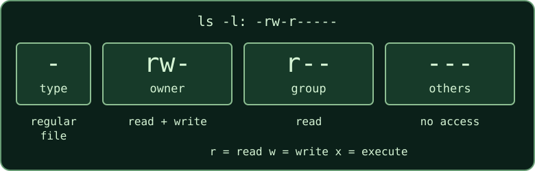

Ordinary Linux permission bits describe access for a file's owner, its group,
and everyone else. Read the three sets separately when inspecting
ls -l output.

| Bit | Regular file | Directory |
|---|---|---|
r | Read contents | List entry names |
w | Change contents | Create or remove entries |
x | Execute as a program | Search or traverse the directory |
Directory operations often require a combination: listing names and accessing the files they name are separate permissions. A file's write bit alone does not control whether its directory entry can be removed.
For an example file that you own, this grants its owner read and write, and clears the group's and everyone else's permissions:
chmod u=rw,go= ~/wiki-demo/notes/route.txt
ls -l ~/wiki-demo/notes/route.txtThe ordinary permission portion should now read rw-------.
Changing permissions does not change ownership. This introduction covers ordinary
permission bits; special mode bits and access control lists are separate topics.
Protect a private report asks for a particular final access policy. Check the resolved path and preserve the file's other required properties.
Return to paths and navigation if the filename is unclear.